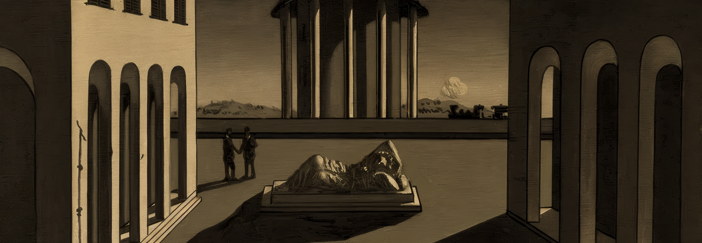

PIAZZE IN PRIMO PIANO


PROVINCE IN PRIMO PIANO

CATANIA
37°30′09.61″N 15°05′14.17″ECatania è un'antica città portuale sulla costa orientale della Sicilia. È situata ai piedi dell'Etna, un vulcano attivo con sentieri che arrivano fino alla sua sommità.

PALERMO
38°06′56.37″N 13°21′40.54″EPalermo fu prima capitale dell'Emirato di Sicilia. Divenne poi capitale del neonato Regno di Sicilia, acquisendo così i titoli di Prima Sedes, Corona Regis et Regni Caput, che mantenne fino alla sua dissoluzione nel 1816.

MESSINA
38°11′37″N 15°33′15″EFondata dai Siculi con il nome di Zancle nel 757 a.C., che nella loro lingua significava falce, venne popolata in seguito da coloni greci venendo rinominata Messana.

SIRACUSA
37°04′09″N 15°17′15″EPosta sulla costa sud-orientale dell'isola, Siracusa possiede una storia millenaria: annoverata tra le più vaste metropoli dell'età classica, primeggiò per potenza e splendore con Atene, la quale tentò invano di assoggettarla.